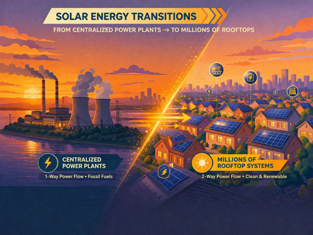
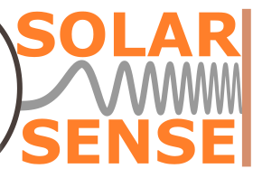

01
Panel-level intelligence
Voltage, current, and temperature measured at every module — granular visibility, not just system-level averages.
SEPT
Solar Sense is the first product line, focused on solar safety, NEC rapid shutdown compliance, and intelligent module-level monitoring.


The energy shift
As the electric power shifts from centralized power plants to millions of rooftop systems, the industry needs a smarter way to monitor, diagnose, and ensure the safety of the people.
Our first product line

Solar Sense is a smart safety device engineered to make rooftop solar safer, smarter, easier to monitor, and easier to maintain.
Solar Sense transforms each solar panel into an intelligent, controllable, safety-aware node — detecting faults in real time and enabling rapid shutdown when it matters most.

What it does
Solar Sense brings together what the industry has tried to solve in pieces — sensing, diagnostics, safety, and architecture — into a single device class designed for distributed solar.
01
Voltage, current, and temperature measured at every module — granular visibility, not just system-level averages.
02
Machine-learning models identify shading, hotspots, electrical anomalies, and early degradation as they happen.
03
Built-in switching enables rapid shutdown — protecting firefighters, technicians, and building occupants on demand.
04
One device per panel, designed for residential, commercial, and research installations alike.
Why it matters

Residential and commercial solar systems operate at dangerous DC voltages — and even when the grid is down, panels keep producing electricity. That creates a serious safety risk for the people closest to the system.
Solar Sense closes that gap with sensor and machine-learning technology that makes rooftop solar smart and safe — detecting faults in real time and enabling rapid shutdown to protect the people on every rooftop.
Join us in making rooftop solar smarter and safer.

Rapid shutdown gives emergency responders a safe path to the roof.

Module-level visibility and rapid shutdown help protect maintenance crews from dangerous DC exposure while they troubleshoot and service the array.

Safer rooftop solar for the people who live and work under it every day.
Go deeper
Product detail, lab tour, business model, and partnership pathways live on our dedicated Solar Sense site — continue there when you are ready to go further.